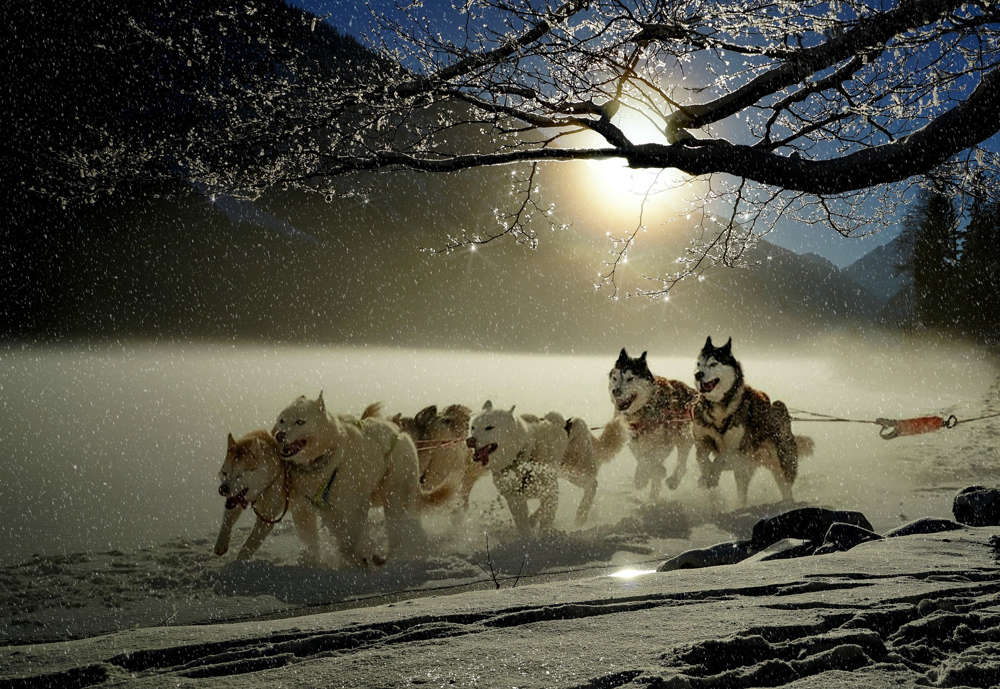

Caring for Alaskan Dogs

Feed your Alaskan dog high-quality dry dog food. If you have a puppy, select a food specially formulated for puppies. Ask your veterinarian for advice about how much to feed your dog; the amounts given by the dog food manufacturer may not fit your pet's individual needs. At a year old, or when your veterinarian recommends it, your dog can begin eating adult dog food. Keep their water bowl full and refresh the water at least once a day. Large breeds such as these consume more water than small breeds. Check the bowl after meals and walks to make sure it isn't low.
Take your husky to the vet regularly for checkups and vaccinations. Your vet will provide you with a schedule for vaccinations and will tell you how often he would like you to bring your dog in. Huskies are a hardy breed, but owners should be on the lookout for eye or hip problems. 
Brush their coat once a week using a wide-toothed comb or large bristle brush. These brushes are ideal for working through the thick double coats of huskies. Weekly brushing will help to cut down on shedding and keep your dog's coat healthy. Bathe your dog only when necessary, which should be infrequently. Bathing too often may irritate his skin. You may need a handheld sprayer to get the water to penetrate his thick fur, and a bath mitt will help you work the shampoo into his undercoat. Use shampoo formulated for dogs.
Enroll yourself and your dog in obedience classes. The younger they are when training starts, the more success you are likely to have. Alaskan dogs, with their high energy, can be difficult to control without proper training. Establish a routine in taking your Siberian husky outside. If you are house-training a puppy, take the puppy outdoors after meals and naps and do not go back in until he does his business. Praise your puppy and reward him with treats to teach him that doing his business outdoors is a desirable behavior.
Take your husky for 30-minute walks at least once a day to help work off their excess energy. If you have a puppy, walks around the yard may be sufficient at first, but you should eventually move on to parks and trails or sidewalks near your home. Give your husky plenty of time to run and play outside. If you have a fenced-in yard, you do not need to supervise all of the time. If you don't have a fence, consider building an enclosed dog run. Your dog should not have the run of the yard without a fence or other enclosure.